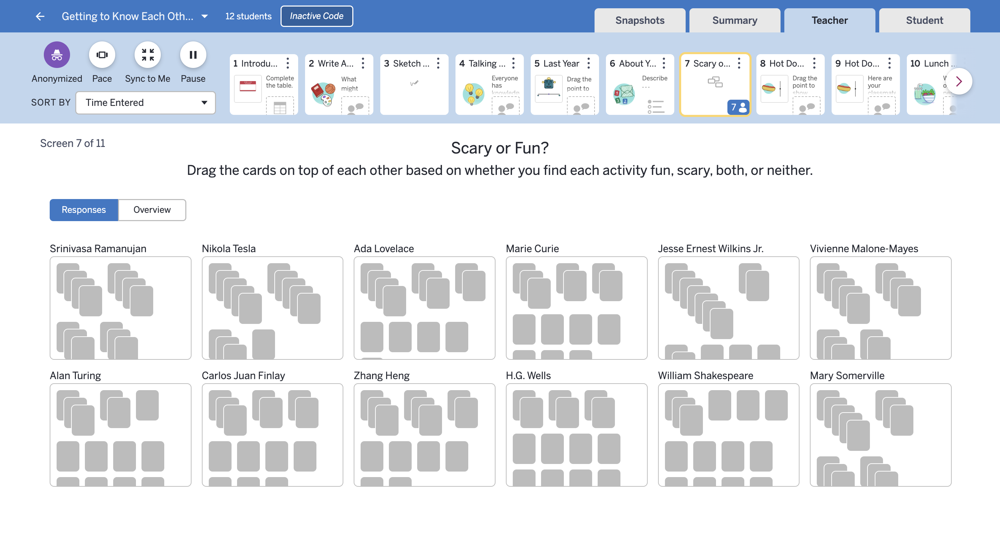
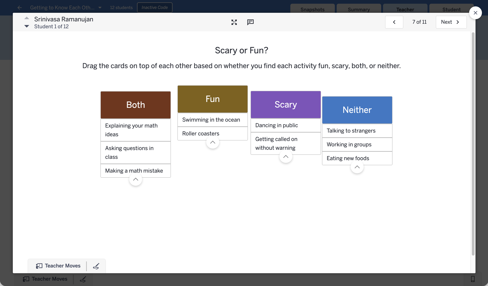
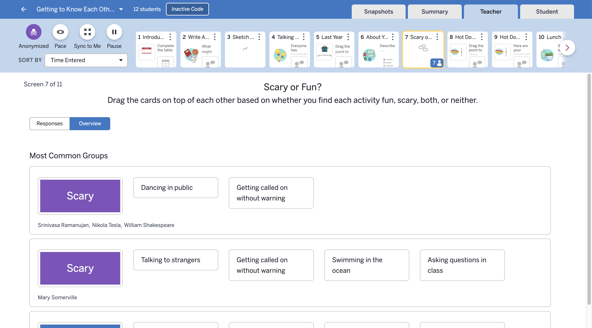
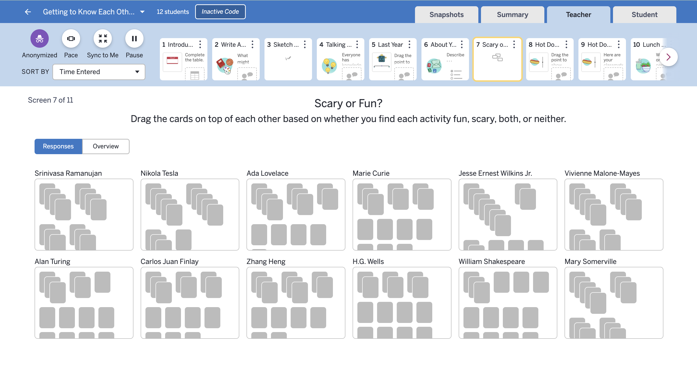
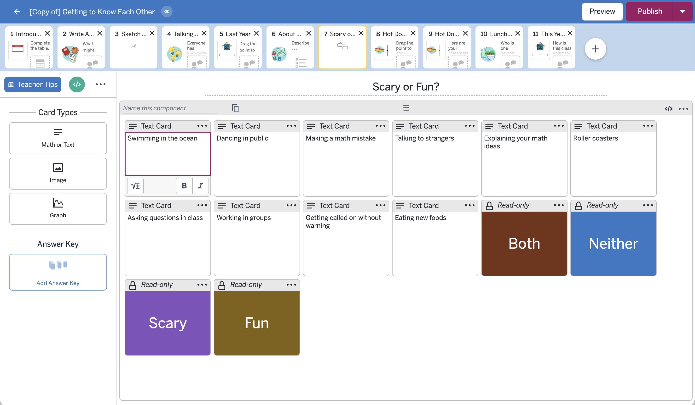

Digital Card Sorts
In 2016, we built a new component in the Desmos Activity Builder to allow teachers to create digital card sorts, a classroom sorting activity that usually requires tons of printing, cutting, and keeping track of cards. By doing card sorts digitally, teachers could easily project student work for discussion and highlight common groupings in the class.
“Gone are the days of paper cutters, laminators, more paper cutters, lost cards, and broken rubber bands. Yes, everyone can create their own card sorts.”




